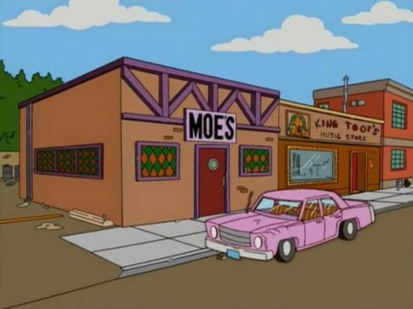

<div>
    <div class="container">
        <div class="row" id="home">
            <h1 class="text-center" id="titulo">BAR DE MOE</h1>
            <div class="col-md-6">
                <p>El Bar de Moe es conocido por ser un lugar sombrío y poco atractivo, con una clientela peculiar. Moe, el dueño del bar, es un personaje gruñón y a menudo se muestra desencantado con su vida y su negocio. A pesar de su apariencia desaliñada, el Bar de Moe es un lugar donde los personajes de Los Simpsons se reúnen para socializar, tomar cerveza y participar en diversas situaciones cómicas.
    
                    La decoración del bar suele ser bastante modesta, con luces tenues y un ambiente un tanto deprimente. Sin embargo, a lo largo de los años, la serie ha explorado más sobre la vida y las experiencias de Moe, añadiendo capas a su personaje y al establecimiento que dirige.</p>
            </div>
            <div class="col-md-6">
                
            </div>
            
        </div>
        
    </div>
</div>
